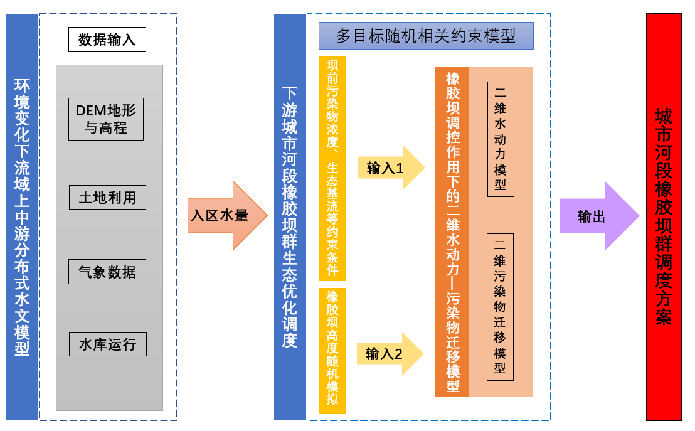

MA.Sc | Hydraulic Engineer
China Three Gorges Corporation Shanghai Research Institute, Shanghai
E-mail : ni2nini@outlook.com

|
MA.Sc | Hydraulic Engineer China Three Gorges Corporation Shanghai Research Institute, Shanghai E-mail : ni2nini@outlook.com |
|
I worked as a hydraulic engineer at China Three Gorges Corporation Shanghai Research Institute from 2020 to 2023, primarily engaged in design, assessment, and monitoring work related to soil and water conservation.
I graduated with a master's degree from Chang'an University under the guidance of Professor Pingping Luo.
My research mainly focuses on watershed risk assessment using distributed models. Currently, I am highly interested in model deployment and visualization within the Google Earth Engine (GEE) environment.

|
Spatial and temporal variations of non-point source pollution risk affected by land use changes in Bahe River Basin.
NIE Qiyang, Lyu Jiqiang, et al.
|

|
Delineation of Digital River Network Threshold Based on Two-sided Mean Change-Point Method——Taking Nantiaoxi Watershed as an Example.
NIE Qiyang
|
|  |
Authorized Invention Patent: A Water Ecological Regulation Method for Urban River Rubber Dam Group.
Lyu Jiqiang,NIE Qiyang, Xue Qiang, et al.
|

|
Development of Digital Software for Erosion Prediction and Assessment Based on High-Resolution DEM and DOM Data.
Serving as Project Leader
|

|
Effects of Climate and Human Activities on Flood Disaster of Loess Plateau in Northwestern China.
Serving as a Key Participant in the Project
|

|
Urban Stormwater Big Data Early Warning Mechanism, Resource Utilization Theory, and Sponge City Design Methods.
Subproject Participant
|

|
Study on Runoff Evolution Mechanism in Loess Plateau under Changing Environment.
Subproject Participant
|
[ Contact Me ], [ GitHub ]